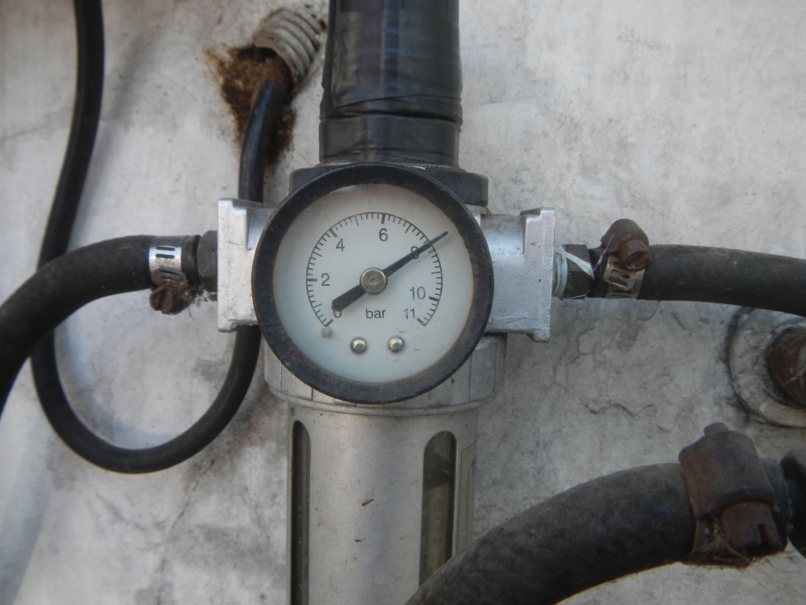
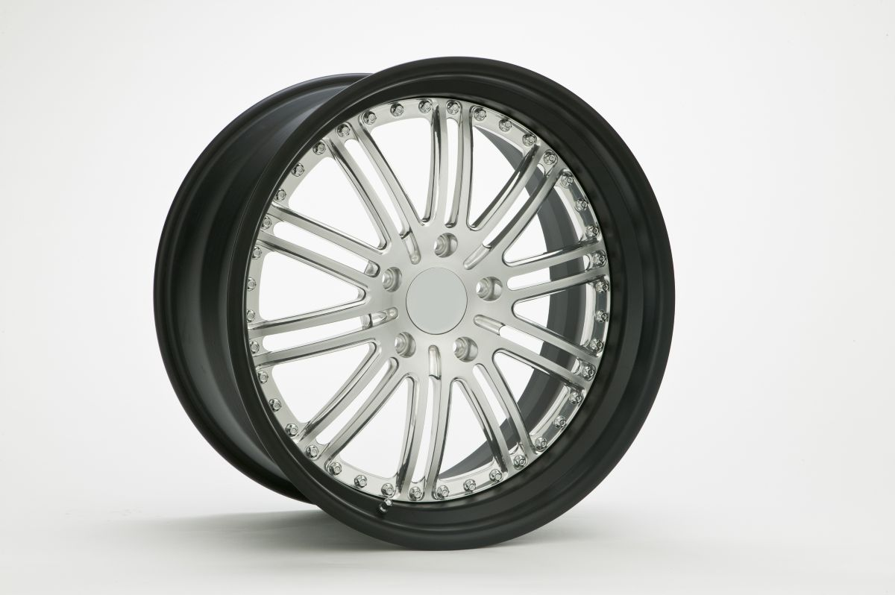
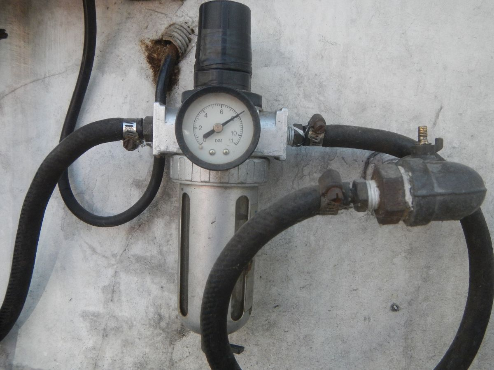
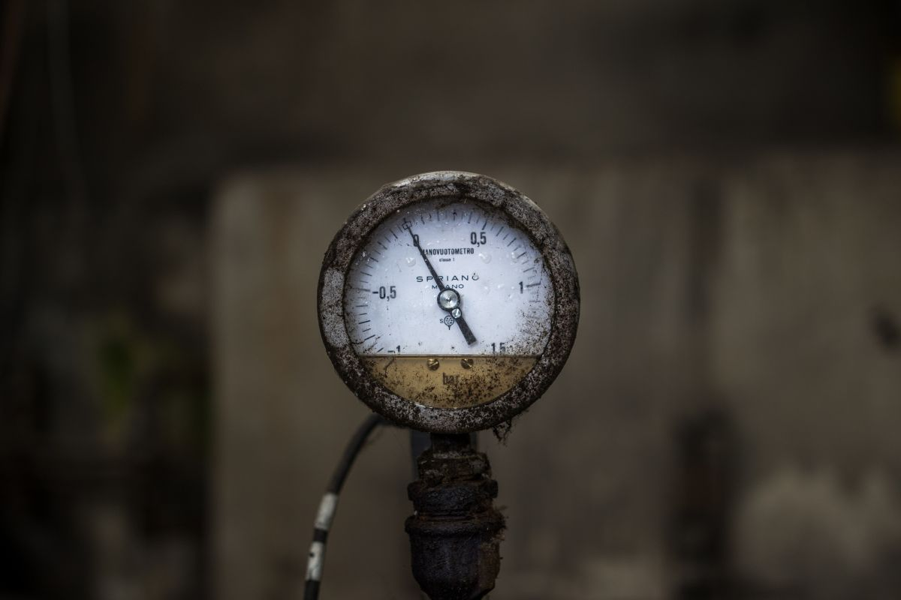
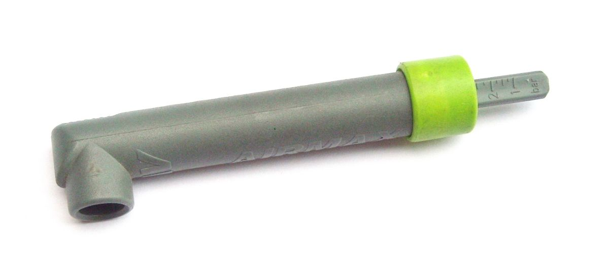
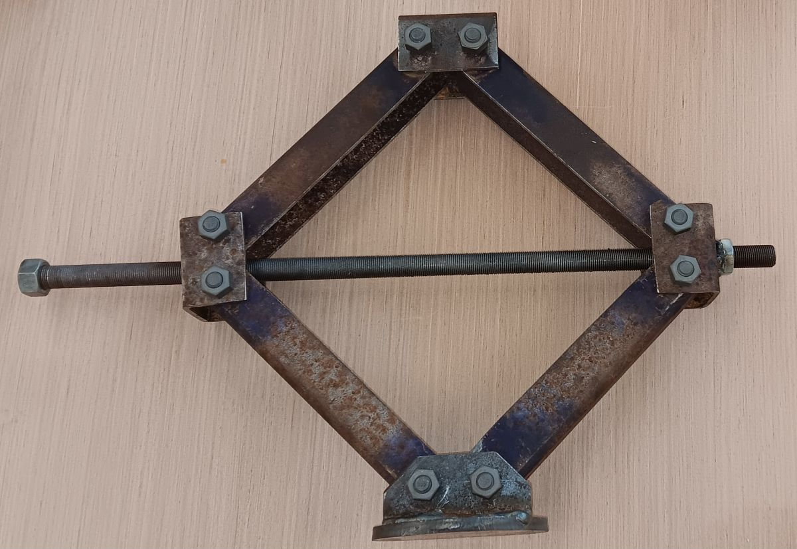
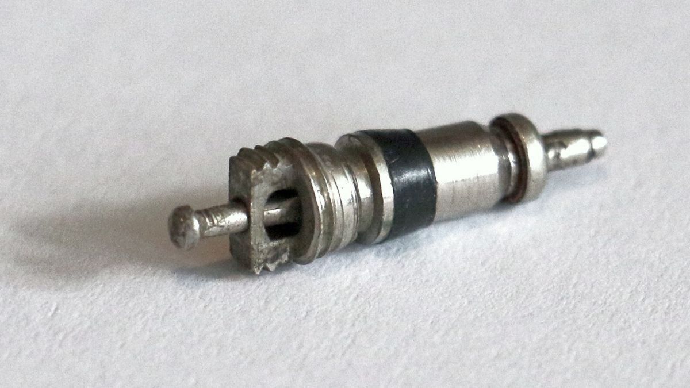

Vulcanización · Puente Alto · Radal 630
Rueda baja. Un mensaje. Vamos.
Reparación de neumáticos en el taller y en el lugar donde quedaste. 300 reseñas con 4,9 en Google: la vulcanización mejor evaluada de Puente Alto, ahora con una página donde encontrarla.
- 300reseñas en Google
- 4,9de promedio
- 1teléfono para todo
- 630Radal, Puente Alto
La pieza para el peor momento
En pana a las tres de la tarde.
Lo primero no es la rueda: es que nadie te choque. Esto es lo que conviene hacer, en orden, y lo que pasa después de mandar el mensaje. Los tiempos son de referencia: dependen de dónde quedaste y de la hora.
-
Sal del flujo, con las luces de emergencia
Orilla a la berma o a un lugar con espacio. Si estás en autopista, sal del vehículo por el lado del cerco y espera detrás de la barrera. Pon el triángulo si tienes.
-
No sigas con la rueda baja
Cien metros más con el neumático desinflado y lo que era un parche pasa a ser un neumático nuevo: el flanco se destruye por dentro y ya no se puede reparar.
-
Manda la ubicación y una foto
Por WhatsApp, con el botón de abajo: se arma solo el mensaje con dónde estás, qué vehículo es y qué pasó. Con la foto se ve si el neumático se repara o hay que llevar uno.
Atención en el lugar dentro de Puente Alto y comunas vecinas. Tiempo de llegada de referencia: 20 a 40 minutos.
-
Lo que pasa cuando llegamos
Si es un pinchazo en la banda, se repara en el lugar. Si el daño es en el flanco, se cambia por la de repuesto o se lleva al taller. Y si no tienes repuesto, se resuelve igual: eso es lo que hace la diferencia.

Un parche bien puesto dura lo que dura el neumático.
Lo que se repara desde adentro, con parche y vulcanizado, no se vuelve a abrir. Lo que se «tapa» desde afuera con un gusano, aguanta hasta la próxima bajada.
Qué hacemos
Lo que se arregla en el lugar y lo que va al taller.
Dos columnas honestas. La lista de servicios es ejemplo hasta que el taller la confirme; la regla de qué se repara y qué no, es de oficio.
En el lugarDonde quedaste
- Reparación de pinchazo en la banda de rodadura
- Cambio por la rueda de repuesto
- Inflado y revisión de las otras tres
- Traslado del neumático al taller si no se puede reparar ahí
En Radal 630El taller
- Vulcanizado en caliente y parches desde adentro
- Balanceo y rotación
- Cambio de válvulas y revisión de llantas
- Neumáticos nuevos y seminuevos, según stock del día
Lo que no se repara: un corte en el flanco, un neumático que rodó desinflado varios kilómetros, o uno con más de dos parches en la misma zona. Se dice de frente y se ofrece la alternativa.
El taller
Radal 630, a la vuelta de la Plaza de Puente Alto.
Un taller de barrio con nota de taller grande. Las reseñas repiten tres palabras: rápido, honesto y barato. Las dos primeras se ven en esta página; la tercera se comprueba en el mesón.
- Dirección
- Radal 630, Puente Alto
- Horario
- Lunes a sábado, de 9:00 a 19:00
- +56 9 6690 0936
- @vulcanizacionsanpio
«Trescientas personas que quedaron en pana y salieron andando. Ninguna escribió la reseña antes de eso.»
Manos y goma
Lo que se hace todos los días.
Fotos del rubro, mientras llegan las del taller.






Llamar
Un solo número para todo.
Para la pana, para preguntar por un neumático y para pedir hora de balanceo. Por WhatsApp o llamando: es el mismo celular.
Para el dueño
Qué es esto y qué falta.
Qué es
Una propuesta de sitio web hecha por nuestra cuenta. El taller no la encargó ni la ha revisado. Dimos por cierto sólo lo que ya es público: las 300 reseñas con 4,9 en Google (27-08-2026), la dirección de Radal 630, el celular y el Instagram.
Qué es ejemplo
La lista de servicios, el horario, la cobertura a domicilio y los tiempos de llegada. Todo va marcado en la página con una línea punteada. No hay precios a propósito, y no hay ni una instrucción para que el cliente levante el auto solo.
El dominio con su nombre está libre
Al 04-09-2026, vulcanizacionsanpio.cl no está registrado en NIC Chile: la web que tuvieron ya no existe y el nombre quedó libre. Esta página pesa menos que una foto, no carga nada de terceros y puede quedar en ese dominio en un día.